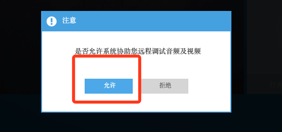

PC端常见问题¶
直播平台在Mac/Windows平台使用过程中，常见问题及解决方案
无法进入课堂¶
Flash 未安装或者过期¶
- 具体情况
在进入课堂后，运行不了Flash,或者Flash显示已过期。
提示已过期
或者提示200
或者提示203
- 原因分析
一般是未安装Flash，或者Flash官方已经更新，本地版本过期。
- 解决方案
重新安装 Flash ,然后重启浏览器，进入课堂。
FLash下载地址 ：https://www.flash.cn/
具体安装调试方式参考：Flash安装
Flash无法启动¶
- 具体情况
确认已经安装了Flah的情况下，进入课堂提示黄色按钮“点击运行客户端”

- 原因分析
Chrome浏览器及基于Chromium的浏览器会默认禁用掉Flash插件,需要重新配置下。
- 解决方案
点击地址栏的“插件禁用ICON”,然后点击“管理“,将Flash设置为“询问”，设置好之后切换回课堂页面，刷新页面
详细步骤参考：浏览器Flash配置
外放没有声音¶
静音状态¶
- 原因分析
部分PC机在之前使用过程中设置了静音，或是连接过其他**蓝牙设备**，导致外放没有声音。
- 解决方案
首先检查是否设置了静音🔇，按键盘上的音量键或者是点击桌面右下角的音量图标
其次检测是否外接了其他音响设备，外设是否开启
直接接入耳机测试是否有声音
进入课堂，点击头像处的设置按钮，点击“开始试听”按钮，观察是否有声音
当前设备未选中¶
- 原因分析
个别电脑接了其他外放设备，未使用或者，播放通道设置有误
- 解决方案
直接接入耳机测试是否有声音
进入课堂，点击头像处的设置按钮，选择扬声器一栏，点击“开始试听”按钮，观察是否有声音
- Mac平台
麦克风系统管理位于 “系统偏好设置”
点击屏幕左上角的 “苹果🍎”ICON,然后选择“系统偏好设置”， 或者点击“程序坞”中的 “齿轮⚙️”，打开“系统偏好设置”
点击“声音”ICON,然后选择“输出”选项进行设置。
- Windows平台
Win10设备查看外放通道，右击外放ICON🔊，打开声音设置界面
在选择输出设备一栏，选择当前正在运行的设备，然后在左右滑动音量，查看音量条是否有扰动，外放是否有声音
或者点击“管理声音设备”，进入设备管理界面，点击“测试”，查看是否禁用，是否有声音
麦克风无声音¶
外接设备¶
- 原因分析
部分台式机没有内置麦克风，外接麦错误或者麦克风被静音
解决方案
双头耳麦是否接反，根据机箱或者是笔记本上印的标记重新接入，一般绿色的为外放，红色的为麦
如果是单孔耳麦接口，检查耳机接头是否为4段，一般手机用耳机都为4段通讯耳机
3.5mm耳机有OMTP及CTIA两个标准，主要区别是在与 接头的4段中 麦克风插针的位置，连接不兼容的耳机可能会导致没有声音或者异响
系统设置¶
- 原因分析
麦设备被静音🔇，或者活动设备选择不匹配
- 解决方案
进入课堂，点击头像处的设置按钮，选择麦克风一栏，下拉框中选择设备，然后对着麦说几句话测试，查看底部音量条是否抖动， 并倾听外放有没有返回声音
如果没有声音，重新插拔一下麦克风，然后重启浏览器进入课堂
- Mac平台
麦克风系统管理位于 “系统偏好设置”
点击屏幕左上角的 “苹果🍎”ICON,然后选择“系统偏好设置”， 或者点击“程序坞”中的 “齿轮⚙️”，打开“系统偏好设置”
点击“声音”ICON,然后选择“输入”选项进行设置。
- Windows平台
右击屏幕右下角的 喇叭🔊 ICON,然后选择声音设置
然后选择 “输入”，设置输入设备及测试设备是否可用
课堂问题定位¶
首先需要确定是哪方的问题，需要教务介入，或者老师学生自行确定，原理相同。
进入课堂（监课）
首先确定是否能过听到双方的声音，听不到声音的一方肯定设备有问题，需要配置
如果双方都有声音，但是课堂有回音，点击学生头像旁边的设置按钮

教务/老师 在设置学生的相关配置时，学生端会有弹框提示，需要通知学生点击确认
在学生端确认之后，将学生端的麦克风音量设置为0，然后点击确认

同时老师端继续讲话，然后倾听课堂是否还有回音

同样的方式，可以设置教师端麦克风音量为0，同时测试学生端设备
回音/单方静音¶
老师端有回音¶
首先进行问题端判定：课堂问题定位
- 原因分析
一般出现这种情况是，两端都有声音，但是一端将另一端的声音通过自身的麦有回传到系统，导致回音出现。
- 解决方案
先接入耳机，检查是否还会出现问题
检查外放是否直接对着麦，转换外放角度
外放音量不要过高
尽量不要处于空旷的房间
本端有回音¶
首先进行问题端判定：课堂问题定位
- 解决方案
先接入耳机，检查是否还会出现问题
检查外放是否直接对着麦，转换外放角度
外放音量不要过高
查看是否在课堂界打开了“设备”界面
Windows平台，查看是否开启了侦听，关闭侦听，然后重启浏览器 Windows 设置侦听
Windows平台，检查麦克风是否有独占 Windows取消麦克风独占模式